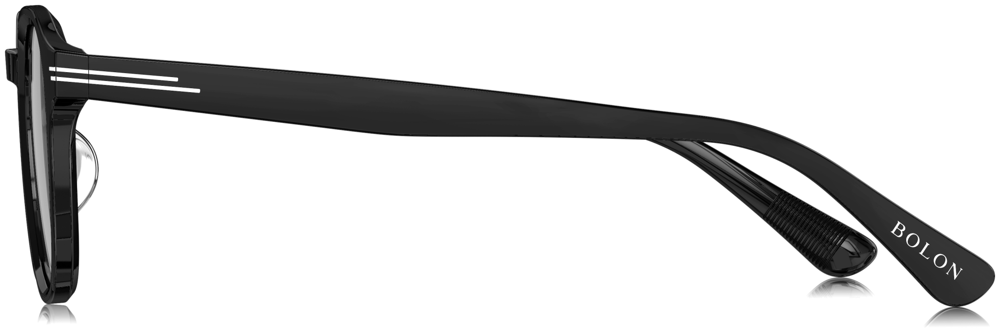
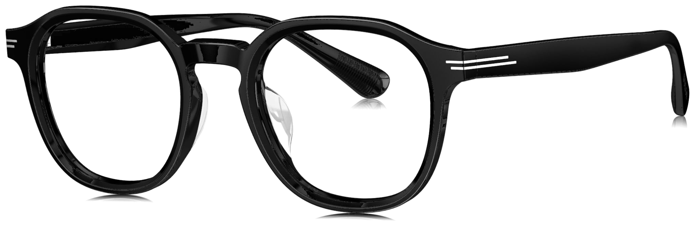
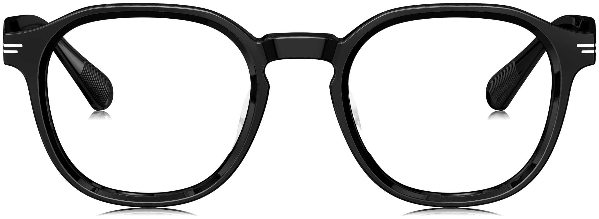

NEW IN STORE
YORKVILLE
Bolon BJ3185 · B10 Black
BJ3185
B10 · Black
THE LENS
HOYA NULUX CLASSIC
Pixel-sharp vision in an ultra-thin lens
THE COATING
HI-VISION LONGLIFE
HOYA's most durable anti-reflective coating
NEW IN STORE
Bolon BJ3185 · HOYA Nulux Classic